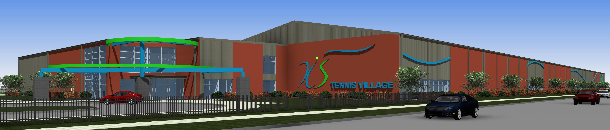
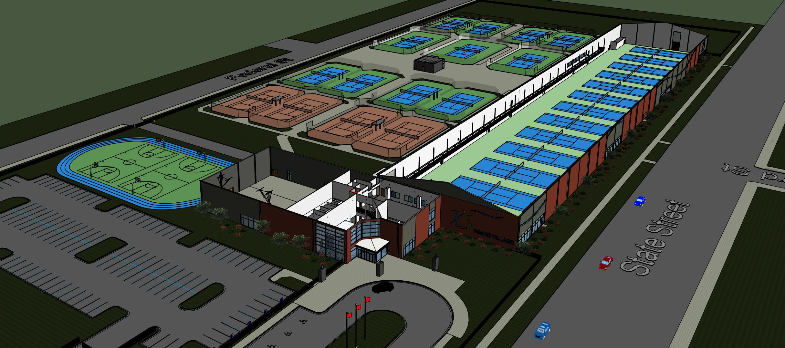

LOG IN
CREATE ACCOUNT

NEW for 2017!! Tennis on the Lake at the XS Tennis Village – 5400 S. State St.
Come join us this indoor season at the brand-new, state-of-the-art tennis facility at the XS Tennis Village founded by Kamau Murray, coach of 2017 U.S. Open champion, Sloane Stevens. Conveniently located just off the Red Line and Dan Ryan Expy. at the Garfield exit.
Travel Times from several popular Chicago neighborhoods.
From Waveland Park, Lakeview -- 30minutes
From Lincoln Park -- 30minutes
From Wicker Park -- 25minutes
From Downtown -- 15minutes
From Bridgeport -- 10minutes
From South Loop & Chinatown -- 10minutes
From Hyde Park -- 10minutes

All class purchases include XS Tennis Village Club Memberships for the term of your class, allowing you to rent court time at the member rate for extra practice and use of the brand-new workout and training facility.
Sign up for two or more classes per session and receive $20 per additional class off your total registration. Per individual. Call 773-278-8877 or email info@tennisonthelake to claim your discount after registering.
Please click
here to let us know if you are interested in or require shuttle service from Waveland Park, Lincoln Park or Downtown to participate in
-
Today I weigh 160 pounds, which is 55 Pounds less than weighed in January of 2013. And a substantial reason why is that in 2013 I reconnected with my long-latent love of playing tennis, through group classes at Tennis On The Lake. Fellow tennis likes in Chicago, group tennis classes at Tennis On The Lake begins this Monday! I just registered. (FYI, I am taking Level 2, Tuesdays and Thursdays 7-8am.) There’s a wide variety of Levels and class days & times. These classes changed my life. ……Ranjit Souri, Chicago IL
-
"This is my second session with TOTL. I cannot recommend it enough. I have had a few different instructors and they are all FABULOUS: Axl (gone home to Sweden), Danny, JP and the owner Pete. I seriously am mad with myself for not finding these guys earlier!!! The only complaint is sometimes theres a little delay getting email responses, but I am in total love. Everyone in my classes has been adorable, and eager to learn. Theres a little tough love (thanks Pete) but its GREAT. Cannot recommend enough!!!!!!! Keep up the great work lads!!!" .....Tony L, Chicago IL
-
"I have been taking lessons here for 3 summers now. All of the instructors are professional, fun, and motivating. Though I take my winters away from the courts, I have improved every summer through Tennis on the Lake. Each tennis pro has their own approach and the head guy, Pete, really is great about catering to your needs individually. Totally flexible crew that really cares about their students.
Last weekend I stopped by their grand opening of the Tennis on the Lake Shop for drinks and appetizers. It's really cool. You can get your racquet restrung, grab something in the little kitchen-ette, and watch a match on the huge TV.
From what I have researched, Tennis on the Lake has the best bang for your buck when it comes to tennis.... so they always keep me coming back!" ....Christa F, Chicago IL
-
"I haven't played tennis regularly since 8th grade, but Tennis on the Lake has renewed my interest. I'm starting my second session with TOL, and I'm enjoying it greatly. The instructors are friendly, and mix up drills to keep things interesting. They're also pretty good at evaluating your skill level. I Initially signed up for an Advanced Beginner class because I didn't know how I'd play for not playing for so long, but after a week they suggested that I join the Intermediate class which made playing more enjoyable. As long as I'm living in the city, I'll be playing tennis with TOL! " .....Kendra, NY New York?
-
"I had a great time taking tennis lessons through these guys. They offer both adult and youth classes at multiple locations. I don't know how all the instructors are, but I worked with the main coach and he was a great instructor. Whether you are looking to learn tennis for the first time or brush up on your skills, I think this is a great place to take lessons" .....S.S, Chicago IL
-
"Vic was a great (and fun) coach and I really enjoyed the few sessions I spent with JP, as well. I'm very bummed not to finish out the summer with a few more lessons, but I'll definitely plan to sign up again next spring..." -Amanda Whetstone